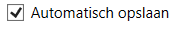
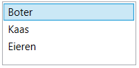
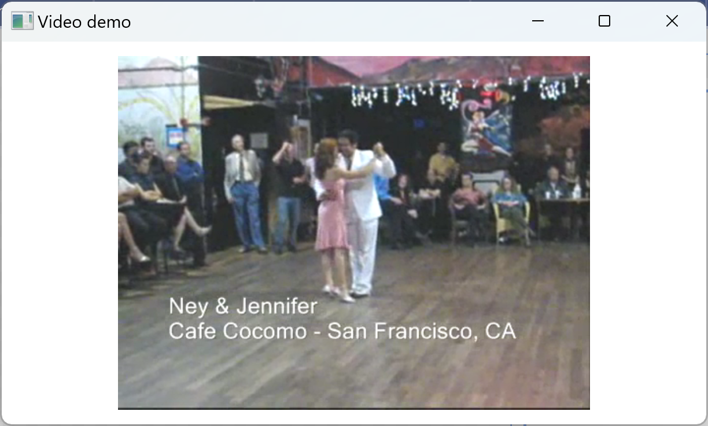
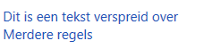
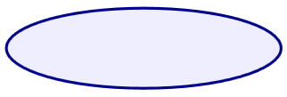
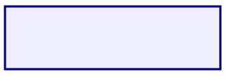
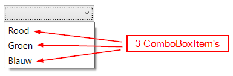
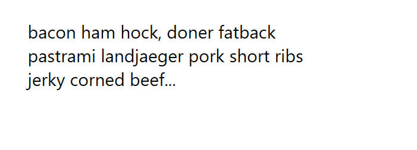

Youtube
IIP — visual studio & WPF
IIP — events
Algemeen
WPF controls overzicht
| Control | Omschrijving | Voorbeeld |
|---|---|---|
| Button | Knop waar gebruiker op kan klikken |  |
| CheckBox | Keuzevakje (aanvinken), meerdere keuzes |  |
| ComboBox | Drop-down menu om keuze te maken |  |
| DatePicker | Datum laten selecteren (via kalender) |  |
| Image | Weergeven van afbeeldingen | |
| Label | Enkel bedoeld voor form control labels | |
| ListBox | Lijst met items weergeven (mogelijkheid tot selecteren) |  |
| MediaElement | Video weergeven |  |
| RadioButton | Keuzerondje (één exclusieve keuze) | |
| Slider | Waarde (getal) selecteren in een bereik d.m.v. schuiven |  |
| TextBlock | Weergeven van tekst (één of meerdere regels) |  |
| TextBox | Invoer van vrije tekst (tekstveld, één of meerdere regels) |  |
De volgende twee zijn strikt gezien geen controls maar shapes (je vindt ze dan ook in System.Windows.Shapes en niet in System.Windows.Controls). Controls kunnen met de gebruiker interageren (met een Click b.v.), shapes niet.
Maar omdat het een visueel WPF element is (en je vindt ze trouwens in de Toolbox onder Controls), nemen we ze toch op in dit hoofdstuk.
| Shape | Omschrijving | Voorbeeld |
|---|---|---|
| Ellipse | Een ellips |  |
| Rectangle | Een rechthoek |  |
WPF control properties
Instellen in XAML
Veel gebruikte properties die je op de meeste controls kan instellen als attributen:
| Property | Omschrijving |
|---|---|
Background |
achtergrondkleur, b.v. "LightGreen" |
Disabled |
uitschakelen, waarden "True" of "False" |
FontFamily |
een lettertype, b.v. "Verdana" |
FontSize |
een lettergrootte, b.v. "12" |
FontWeight |
een lettergewicht, b.v. "Bold" |
Foreground |
tekstkleur, b.v. "Navy" |
Opacity |
transparantie, b.v. "0.7" (0 = doorzichtig, 1 = normaal) |
Padding |
binnenafstand, b.v. "20,10,20,30" (links-boven-rechts-onder) |
TextAlignment |
horizontale tekstuitlijning, waarde "Center", "Justify", "Left" of "Right" |
<TextBox
x:Name="txt1"
Background="BlanchedAlmond"
Disabled="True"
FontFamily="Verdana"
FontSize="12"
FontWeight="SemiBold"
Foreground="DarkBlue"
Opacity="0.7"
Padding="20,10,20,30"
TextAlignment="Right"
Text="short loin chicken chislic boudin, fatback shank strip steak pancetta pig hamburger jerky shankle chuck" .../>Instellen in C#
Je kan deze properties ook instellen in C#:
txt1.Background = Brushes.BlanchedAlmond;
txt1.Disabled = true;
txt1.FontFamily = new FontFamily("Verdana");
txt1.FontSize = 12;
txt1.FontWeight = FontWeights.SemiBold;
txt1.Foreground = Brushes.DarkBlue;
txt1.Opacity = 0.7;
txt1.Padding = new Thickness(20, 10, 20, 30);
txt1.TextAlignment = TextAlignment.Right;
Je hebt dan vaak meer mogelijkheden, zoals kleuren instellen met RGB waarden (zie klasse Color):
txt1.Background = new SolidColorBrush(Color.FromRgb(11, 212, 21));
Randen
Randen instellen doe je — misschien wat vreemd — niet met een property, maar met een Border control:
- wrap de control in een
<Border> ... </Border> - stel properties
BorderThicknessenBorderBrushin - verhuis de layout properties
Height,HorizontalAlignment,Margin,VerticalAlignmentenWidthvan de control naar deBorder
Een TextBox zonder Border:
<TextBox
x:Name="txt1"
AcceptsReturn="True"
Height="125"
HorizontalAlignment="Left"
Margin="10,10,0,0"
Padding="20,10,20,30"
Text="short loin chicken chislic boudin, fatback shank strip steak pancetta pig hamburger jerky shankle chuck"
TextWrapping="Wrap"
VerticalAlignment="Top"
Width="200"/>Dezelfde TextBox met Border:
<Border
BorderBrush="DarkGreen"
BorderThickness="4"
Height="125"
HorizontalAlignment="Left"
Margin="10,10,0,0"
VerticalAlignment="Top"
Width="200">
<TextBox
x:Name="txt1"
AcceptsReturn="True"
Padding="20,10,20,30"
Text="short loin chicken chislic boudin, fatback shank strip steak pancetta pig hamburger jerky shankle chuck"
TextWrapping="Wrap" />
</Border>
Event sender
Neem volgend voorbeeld met 6 buttons:
<Button x:Name="btn1" Content="KNOP 1" Click="Btn1_Click" ... />
<Button x:Name="btn2" Content="KNOP 2" Click="Btn2_Click" ... />
<Button x:Name="btn3" Content="KNOP 3" Click="Btn3_Click" ... />
<Button x:Name="btn4" Content="KNOP 4" Click="Btn4_Click" ... />
<Button x:Name="btn5" Content="KNOP 5" Click="Btn5_Click" ... />
<Button x:Name="btn6" Content="KNOP 6" Click="Btn6_Click" ... />
<TextBlock x:Name="txtBericht" Text="" />
private void Btn1_Click(object sender, RoutedEventArgs e) {
txtBericht.Content = "KNOP 1 geklikt";
}
private void Btn2_Click(object sender, RoutedEventArgs e) {
txtBericht.Content = "KNOP 2 geklikt";
}
private void Btn3_Click(object sender, RoutedEventArgs e) {
txtBericht.Content = "KNOP 3 geklikt";
}
...
In plaats van aparte event handlers te maken voor elke button apart, kan je ook één event handler koppelen aan alle buttons:
<Button x:Name="btn1" Content="KNOP 1" Click="Btn_Click" ... />
<Button x:Name="btn2" Content="KNOP 2" Click="Btn_Click" ... />
<Button x:Name="btn3" Content="KNOP 3" Click="Btn_Click" ... />
<Button x:Name="btn4" Content="KNOP 4" Click="Btn_Click" ... />
<Button x:Name="btn5" Content="KNOP 5" Click="Btn_Click" ... />
<Button x:Name="btn6" Content="KNOP 6" Click="Btn_Click" ... />
<TextBlock x:Name="txtBericht" Text="" />
Je vindt dan terug op welke button geklikt werd via de sender parameter:
// 'sender' is het object dat het event veroorzaakt heeft
private void Btn_Click(object sender, RoutedEventArgs e) {
Button btn = (Button)sender; // zet om naar Button
txtBericht.Content = $"{btn.Content} geklikt";
}
Tag property
Je kan gebruik maken van de Tag property van WPF controls om een extra waarde aan een control te verbinden.
Voorbeeld waarbij elke knop zelf bijhoudt hoeveel keer erop geklikt is:
<Button x:Name="btn1" Content="KNOP 1" Tag="0" Click="Btn_Click" ... />
<Button x:Name="btn2" Content="KNOP 2" Tag="0" Click="Btn_Click" ... />
<Button x:Name="btn3" Content="KNOP 3" Tag="0" Click="Btn_Click" ... />
<TextBlock x:Name="lblBericht" Text="" />private void Btn_Click(object sender, RoutedEventArgs e)
{
Button btn = (Button)sender;
int timesClicked = Convert.ToInt32(btn.Tag);
timesClicked++;
btn.Tag = Convert.ToString(timesClicked);
lblBericht.Text = $"{btn.Content} is {timesClicked} keer geklikt";
}
Controls dynamisch toevoegen in C#
Voorbeeld 1: ellips dynamisch toevoegen aan een Canvas
<Canvas x:Name="canvas1" HorizontalAlignment="Left" Height="255" Margin="10,95,0,0" VerticalAlignment="Top" Width="750"/>
<Button x:Name="btnTekenen" Content="TEKENEN" HorizontalAlignment="Left" Margin="540,45,0,0" VerticalAlignment="Top" Padding="10,5" Click="BtnTekenen_Click"/>private void BtnTekenen_Click(object sender, RoutedEventArgs e)
{
// maak de ellips
Ellipse newEllipse = new Ellipse() {
Width = 150,
Height = 60,
Fill = new SolidColorBrush(Color.FromRgb(122, 78, 200))
};
// stel positie in
double xPos = 50;
double yPos = 85;
newEllipse.SetValue(Canvas.LeftProperty, xPos);
newEllipse.SetValue(Canvas.TopProperty, yPos);
// voeg ellips toe aan het canvas
canvas1.Children.Add(newEllipse);
}
Voorbeeld 2: foto's uit een map weergeven in een browser met klikbare buttons
De XAML bestaat uit een lege StackPanel en een Image
<StackPanel x:Name="pnlButtons" Margin="10" Height="50" VerticalAlignment="Top" Orientation="Horizontal"></StackPanel>
<Image x:Name="img1" HorizontalAlignment="Left" Height="180" Margin="10,70,0,0" VerticalAlignment="Top" Width="196"/>
In MainWindow() overlopen we de "Images" map en voegen we voor elke foto een Button toe aan de StackPanel:
public MainWindow()
{
InitializeComponent();
string[] files = Directory.GetFiles("Images", "*.jpg");
for (int i = 0; i < files.Length; i++)
{
// url van de foto
string fileName = files[i];
// maak een Button
Button newButton = new Button()
{
Content = $"foto {i + 1}",
Padding = new Thickness(10, 5, 10,5),
Tag = fileName,
VerticalAlignment = VerticalAlignment.Top,
HorizontalAlignment= HorizontalAlignment.Left,
};
// click event handler toevoegen
newButton.Click += BtnClick;
// button toevoegen aan wrappanel
pnlButtons.Children.Add(newButton);
}
}
private void BtnClick(object sender, RoutedEventArgs e)
{
Button clicked = sender as Button;
string fileName = clicked.Tag.ToString();
img1.Source = new BitmapImage(new Uri(fileName, UriKind.Relative));
}
Button
Een Button is een knop waarop de gebruiker kan klikken. De basis XAML:
<Button x:Name="btnTest" Content="Klik mij" Click="BtnTest_Click" .../>
Properties en events
| Property | Omschrijving |
|---|---|
Content |
tekst op de knop |
| Event | Omschrijving |
|---|---|
Click |
afgevuurd wanneer de gebruiker op de knop heeft geklikt |
MouseEnter |
afgevuurd wanneer de gebruiker met de cursor over de knop beweegt |
MouseLeave |
afgevuurd wanneer de gebruiker met de cursor de knop verlaat |
Voorbeeld
Tekst tonen bij klik op button
<TextBlock x:Name="txtMessage" Text="..." HorizontalAlignment="Left" Margin="27,20,0,0" VerticalAlignment="Top"/>
<Button x:Name="btnSpeak" Content="Zeg Iets" HorizontalAlignment="Left" Margin="27,70,0,0" VerticalAlignment="Top" Width="100" Height="23" Click="BtnSpeak_Click"/>
private void BtnSpeak_Click(object sender, RoutedEventArgs e)
{
txtMessage.Text = "Hi there";
}CheckBox
Een CheckBox is een keuzevakje dat de gebruiker kan aan/uit-vinken. De basis XAML:
<CheckBox x:Name="chbAutoSave" Content="Automatisch opslaan" IsChecked="True" Checked="ChbAutoSave_Checked" Unchecked="ChbAutoSave_Checked" .../>Properties en events
| Property | Omschrijving |
|---|---|
Content |
tekst naast het vakje |
IsChecked |
true indien het vakje aangevinkt is, anders false |
| Event | Omschrijving |
|---|---|
Checked |
afgevuurd wanneer de gebruiker het vakje aanvinkt |
Unchecked |
afgevuurd wanneer de gebruiker het vakje afvinkt |
Voorbeelden
Controleren of CheckBox is aangevinkt
if (chkThuisbezorgen.IsChecked == true)
{
// checkbox is aangevinkt
}CheckBox via code aanvinken
chkThuisbezorgen.IsChecked = true; // false om af te vinkenChecked / Unchecked events
<TextBlock x:Name="txtMessage" Text="..." HorizontalAlignment="Left" Margin="27,20,0,0" VerticalAlignment="Top"/>
<CheckBox x:Name="chbYesNo" Content="mee eens of niet?" HorizontalAlignment="Left" Margin="27,70,0,0" VerticalAlignment="Top" Checked="chbYesNo_Checked" Unchecked="chbYesNo_Unchecked"/>
private void chbYesNo_Checked(object sender, RoutedEventArgs e)
{
txtMessage.Content = "ja, mee eens";
}
private void chbYesNo_Unchecked(object sender, RoutedEventArgs e)
{
txtMessage.Content = "nee, niet mee eens";
}
Je kan de code nog vereenvoudigen door de twee event handlers chbYesNo_Checked() en chbYesNo_Unchecked() samen te nemen in één methode ChbYesNo_Click():
<TextBlock x:Name="txtMessage" Text="..." HorizontalAlignment="Left" Margin="27,20,0,0" VerticalAlignment="Top"/>
<CheckBox x:Name="chbYesNo" Content="mee eens of niet?" HorizontalAlignment="Left" Margin="27,71,0,0" VerticalAlignment="Top" Click="ChbYesNo_Click"/>
private void ChbYesNo_Click(object sender, RoutedEventArgs e)
{
if (chbYesNo.IsChecked == true)
{
txtMessage.Text = "ja, mee eens";
}
else
{
txtMessage.Text = "nee, niet mee eens";
}
}
Of nog korter, met de ternaire operator:
private void ChbYesNo_Click(object sender, RoutedEventArgs e)
{
txtMessage.Text = chbYesNo.IsChecked == true ? "ja, mee eens" : "nee, niet mee eens";
}
ComboBox
Een ComboBox is een drop-down lijst met opties (ComboBoxItem's) waarin de gebruiker één item kan selecteren. De basis XAML:
<ComboBox x:Name="cbxColors" Width="120" SelectionChanged="cbxColors_SelectionChanged" ...>
<ComboBoxItem Content="Rood"/>
<ComboBoxItem Content="Groen"/>
<ComboBoxItem Content="Blauw"/>
</ComboBox>De manier van werken items is bijna identiek met de Listbox, alleen gebruiken we ComboBoxItem i.p.v. ListBoxItem, en bestaat er geen SelectionMode="Multiple" voor de ComboBox.

Properties en events
Properties en events van ComboBox:
| Property | Omschrijving |
|---|---|
Items |
collection van alle ComboBoxItem's in de ComboBox |
SelectedIndex |
index (positie) van het geselecteerde item (begint bij 0!), of -1 indien geen optie geselecteerd |
SelectedItem |
geselecteerde ComboBoxItem-element, of null indien geen geselecteerd |
| Event | Omschrijving |
|---|---|
SelectionChanged |
afgevuurd wanneer de gebruiker een optie in de ComboBox selecteert |
Properties van ComboBoxItem:
| Property | Omschrijving |
|---|---|
Content |
inhoud van het item (dit is de tekst die voor deze optie zal weergegeven worden in de ComboBox) |
IsSelected |
bool die aangeeft of het item geselecteerd werd in de ComboBox (true) of niet (false) |
Voorbeelden
Dynamisch items toevoegen
ComboBoxItem item = new ComboBoxItem(); // maak een nieuw ComboBoxItem
item.Content = "Oranje"; // stel de inhoud (tekst) van het item in
cboKleuren.Items.Add(item); // voeg het nieuwe item toe aan de collectie met items in de ComboBoxof korter genoteerd:
cboKleuren.Items.Add(new ComboBoxItem() { Content = "Oranje" }); // initialisatie en toevoegen in één keerNagaan of gebruiker een item geselecteerd heeft
if (cboKleuren.SelectedIndex != -1)
{
// gebruiker heeft een item geselecteerd
}
of ook:
if (cboKleuren.SelectedItem != null)
{
// gebruiker heeft een item geselecteerd
} Inhoud van het geselecteerde item opvragen
// controleer eerst of er een selectie gemaakt werd!
if (cboKleuren.SelectedItem != null)
{
ComboBoxItem selectie = (ComboBoxItem)cboKleuren.SelectedItem; // cast naar ComboBoxItem
string inhoud = selectie.Content.ToString(); // zet inhoud van geselecteerde item om naar een string
// doe iets met variabele 'inhoud'
}Itereren over items in een ComboBox
foreach (ComboBoxItem item in cboKleuren.Items)
{
// doe iets met item, bv.: item.Content
}Samenvattend voorbeeld
Voorbeeld voor selecteren van tweede optie en toevoegen item in C#, en tonen geselecteerde optie in een TextBlock:
<TextBlock x:Name="txtMessage" Text="..." HorizontalAlignment="Left" Margin="27,20,0,0" VerticalAlignment="Top"/>
<ComboBox x:Name="cbxCountries" HorizontalAlignment="Left" Margin="27,66,0,0" VerticalAlignment="Top" Width="120" SelectionChanged="cbxCountries_SelectionChanged">
<ComboBoxItem Content="België" HorizontalAlignment="Left" Width="118"/>
<ComboBoxItem Content="Frankrijk" HorizontalAlignment="Left" Width="118"/>
<ComboBoxItem Content="Nederland" HorizontalAlignment="Left" Width="118"/>
</ComboBox>
public MainWindow()
{
InitializeComponent();
// selecteer tweede optie
cbxCountries.SelectedIndex = 1;
// voeg nog een item "Spanje" toe
ComboBoxItem newItem = new ComboBoxItem();
newItem.Content = "Spanje";
cbxCountries.Items.Add(newItem);
}
private void cbxCountries_SelectionChanged(object sender, SelectionChangedEventArgs e)
{
ComboBoxItem selectedItem = (ComboBoxItem)cbxCountries.SelectedItem;
txtMessage.Text = $"geselecteerd: {selectedItem.Content}";
}
DatePicker
Een DatePicker is een control waarmee je een gebruiker een datum kunt laten invoeren door deze te selecteren via een kalender.
<DatePicker x:Name="datBirthday" SelectedDate="01/08/1970" SelectedDateChanged="DatBirthday_SelectedDateChanged" .../>
Properties en events
| Property | Omschrijving |
|---|---|
SelectedDate |
De datum die de gebruiker geselecteerd heeft (type DateTime). Indien de gebruiker géén datum geselecteerd heeft, is de waarde van deze property null |
| Event | Omschrijving |
|---|---|
SelectedDateChanged |
afgevuurd wanneer de gebruiker een datum selecteert |
Voorbeelden
Geselecteerde datum opvragen
// controleer eerst of gebruiker een datum geselecteerd heeft!
if (dpcGeboortedatum.SelectedDate != null)
{
DateTime datum = dpcGeboortedatum.SelectedDate.Value; // opgelet: .Value
// doe iets met variabele 'datum'
}Ellipse
XAML voorbeeldcode:
<Rectangle HorizontalAlignment="Left" Height="30" Width="100" Margin="10,10,0,0" Fill="#EEEEFF" Stroke="DarkBlue" VerticalAlignment="Top"/>Properties en events
De belangrijkste properties van de Ellipse zijn dezelfde als die van Rectangle:
| Property | Omschrijving |
|---|---|
Fill |
vulkleur |
Height |
hoogte |
Stroke |
randkleur |
StrokeThickness |
randdikte |
Width |
breedte |
Voorbeelden
Ellips met twee sliders
<Canvas x:Name="canvas1" Width="250" Height="150" Background="#FFF1F1F1"
Margin="20,10,0,0" VerticalAlignment="Top" HorizontalAlignment="Left">
<Ellipse x:Name="ellipse1" Width="100" Height="50" Stroke="Blue" Fill="LightBlue"/>
</Canvas>
<TextBlock Text="Breedte:" HorizontalAlignment="Left" Margin="20,165,0,0" VerticalAlignment="Top"/>
<Slider x:Name="sldWidth" Maximum="250" Width="150" ValueChanged="Slider_ValueChanged" HorizontalAlignment="Left"
Margin="85,165,0,0" VerticalAlignment="Top" />
<TextBlock x:Name="txtWidth" Text="100" HorizontalAlignment="Left" Margin="240,165,0,0" VerticalAlignment="Top"/>
<TextBlock Text="Hoogte:" HorizontalAlignment="Left" Margin="20,190,0,0" VerticalAlignment="Top"/>
<Slider x:Name="sldHeight" Maximum="150" Width="150" ValueChanged="Slider_ValueChanged" HorizontalAlignment="Left"
Margin="85,190,0,0" VerticalAlignment="Top"/>
<TextBlock x:Name="txtHeight" Text="50" HorizontalAlignment="Left" Margin="240,190,0,0" VerticalAlignment="Top"/>De C# code-behind:
public MainWindow()
{
InitializeComponent();
sldWidth.Value = 100;
sldHeight.Value = 50;
}
private void Slider_ValueChanged(object sender, RoutedPropertyChangedEventArgs<double> e)
{
ellipse1.Width = sldWidth.Value;
ellipse1.Height = sldHeight.Value;
txtWidth.Text = $"{sldWidth.Value:F0}";
txtHeight.Text = $"{sldWidth.Value:F0}";
}

Image
Basisvoorbeeld
Je kunt een Image-control gebruiken om een afbeeling weer te geven op het scherm. De basis XAML:
<Image x:Name="img1" Source="Images/photo1.jpg" Height="100" Width="100" .../>Stretch property
Met Stretch kan je instellen wat moet gebeuren als de afmetingen van de afbeelding afwijken van de Image:
<Image Height="100" Width="200" Source="Images/jordy1.jpg" Margin="10" Stretch="None" />
<Image Height="100" Width="200" Source="Images/jordy1.jpg" Margin="10" Stretch="Fill" />
<Image Height="100" Width="200" Source="Images/jordy1.jpg" Margin="10" Stretch="Uniform" />
<Image Height="100" Width="200" Source="Images/jordy1.jpg" Margin="10" Stretch="UniformToFill" />
| Stretch waarde | Vervorming? | Omschrijving |
|---|---|---|
None |
nee | afbeelding wordt geplaatst in de werkelijke afmetingen |
Fill |
ja | afbeelding horizontaal en verticaal uitgerokken |
Uniform |
nee | afbeelding past in de Image |
UniformToFill |
nee | afbeelding bedekt de Image |

None — Fill — Uniform — UniformToFillRand en achtergrondkleur
Gebruik een Border control rond de Image voor rand en achtergrondkleur:
<Border BorderBrush="DarkGreen" BorderThickness="2" Background="Beige">
<Image Height="100" Width="100" Source="Images/jordy1.jpg" Margin="10" Stretch="Uniform" />
</Border>
Afbeeldingen toevoegen aan je project
Zie https://rogiervdl.github.io/DEVENV-course/04_visualstudio.html#media-en-andere-bestanden-toevoegen
Properties en events
| Property | Omschrijving |
|---|---|
Source |
Bepaalt welke afbeelding getoond moet worden (locatie, Bitmap, ...) |
| Event | Omschrijving |
|---|---|
MouseEnter |
afgevuurd wanneer de gebruiker met de cursor over de afbeelding beweegt |
MouseLeave |
afgevuurd wanneer de gebruiker met de cursor buiten de afbeelding beweegt |
Voorbeelden
Dynamisch afbeelding instellen
imgPizza.Source = new BitmapImage(new Uri(@"afbeeldingen/pizza.png", UriKind.RelativeOrAbsolute)); // afbeelding: afbeeldingen/pizza.pngVoorbeeld met drie buttons
<Image x:Name="imgPhoto" Source="Images/photo1.jpg" HorizontalAlignment="Left" Height="100" Margin="27,35,0,0" VerticalAlignment="Top" Width="100"/>
<Button x:Name="btnShow1" Content="toon foto 1" HorizontalAlignment="Left" Margin="27,155,0,0" VerticalAlignment="Top" Width="75" Click="BtnShow1_Click" />
<Button x:Name="btnShow2" Content="toon foto 2" HorizontalAlignment="Left" Margin="122,155,0,0" VerticalAlignment="Top" Width="75" Click="BtnShow2_Click"/>
<Button x:Name="btnShow3" Content="toon foto 3" HorizontalAlignment="Left" Margin="216,155,0,0" VerticalAlignment="Top" Width="75" Click="BtnShow3_Click"/>
private void BtnShow1_Click(object sender, RoutedEventArgs e)
{
imgPhoto.Source = new BitmapImage(new Uri("Images/photo1.jpg", UriKind.Relative));
}
private void BtnShow2_Click(object sender, RoutedEventArgs e)
{
imgPhoto.Source = new BitmapImage(new Uri("Images/photo2.jpg", UriKind.Relative));
}
private void BtnShow3_Click(object sender, RoutedEventArgs e)
{
imgPhoto.Source = new BitmapImage(new Uri("Images/photo3.jpg", UriKind.Relative));
}
Label
De functie is hetzelfde als <label> in HTML: een beschrijvende tekst naast een form control. Voorbeeld:
<Label x:Name="txtNaam" Content="Je naam:" .../>
<TextBox x:Name="inpNaam" .../>Properties
| Property | Omschrijving |
|---|---|
Content |
De inhoud (tekst) van het label |
FontSize |
tekstgrootte |
FontFamily |
lettertype |
FontWeight |
lettergewicht |
ForeGround |
tekstkleur |
ListBox
Een ListBox lijkt sterk op een ComboBox — het is ook een lijst van items waaruit je kan kiezen. De voornaamste verschillen:
- de items worden in een vak (eventueel met scrollbar) weergegeven in plaats van in een dropdown
- door
SelectionModein te stellen optrue, kunnen meerdere items tegelijk geselecteerd worden - de items zijn van het type
ListBoxItemin plaats vanComboBoxItem
De basis XAML:
<ListBox x:Name="lbxShopping" Height="100" Width="250" SelectionChanged="LbxShopping_SelectionChanged" ...>
<ListBoxItem Content="Brood"/>
<ListBoxItem Content="Eieren"/>
<ListBoxItem Content="Kaas"/>
<ListBoxItem Content="Houmous"/>
<ListBoxItem Content="Avocado"/>
</ListBox>Properties en events
Properties en events van ListBox:
| Property | Omschrijving |
|---|---|
Items |
collection van alle ListBoxItem's in de ListBox |
SelectedIndex |
index (positie) van het geselecteerde item; -1 indien geen geselecteerd (enkel te gebruiken indien SelectionMode de waarde Single heeft) |
SelectedItem |
geselecteerd item; null indien geen geselecteerd (enkel te gebruiken indien SelectionMode de waarde Single heeft) |
SelectedItems |
collectie van geselecteerde items (enkel te gebruiken indien SelectionMode de waarde Multiple heeft) |
SelectionMode |
hoeveel elementen tegelijk kunnen geselecteerd worden: Single (slechts één) of Multiple (meerdere tegelijk) |
| Event | Omschrijving |
|---|---|
SelectionChanged |
afgevuurd wanneer de gebruiker een item in de ListBox (de-)selecteert |
Properties en methodes van ListBox.Items:
| Property | Omschrijving |
|---|---|
Count |
aantal items in de ListBox |
| Methode | Omschrijving |
|---|---|
Add(item) |
voeg item toe |
Clear() |
wis alle items |
Insert(index, item) |
voeg een item toe op gegeven positie |
Remove(item) |
verwijder een item |
RemoveAt(index) |
verwijder een item op gegeven positie |
Properties en events van ListBoxItem:
| Property | Omschrijving |
|---|---|
Content |
De inhoud van het item (dit is de tekst die voor deze optie zal weergegeven worden in de ListBox) |
IsSelected |
bool die aangeeft of het item geselecteerd werd in de ListBox (true) of niet (false) |
Voorbeelden
Dynamisch items toevoegen
ListBoxItem item = new ListBoxItem(); // maak een nieuw ListBoxItem
item.Content = "Brood"; // stel de inhoud (tekst) van het item in
lstBoodschappen.Items.Add(item); // voeg het nieuwe item toe aan de collectie met items in de ListBoxof korter genoteerd:
lstBoodschappen.Items.Add(new ListBoxItem() { Content = "Brood" }); // initialisatie en toevoegen in één keerIn theorie kan je ook rechtstreeks een string in een ListBox kan steken, zonder te verpakken in ListBoxItem:
// string toevoegen zonder ListBoxItem
lstBoodschappen.Items.Add("Brood");
lstBoodschappen.Items.Add("Kaas");
lstBoodschappen.Items.Add("Eieren");- er zijn nu geen opmaakmogelijkheden meer als zichtbaarheid, achtergrond, lettertype...
- gebruik daarom altijd
ListBoxItemals je items wil toevoegen aan eenList
Nagaan of gebruiker een item geselecteerd heeft
if (lstBoodschappen.SelectedIndex != -1)
{
// er werd (minimum) één item geselecteerd
}of ook:
if (lstBoodschappen.SelectedItem != null)
{
// gebruiker heeft (minimum) één item geselecteerd
}of ook:
if (lstBoodschappen.SelectedItems.Count > 0)
{
// gebruiker heeft (minimum) één item geselecteerd
}Geselecteerde item en inhoud opvragen (single selection mode)
// controleer eerst of er een selectie gemaakt werd!
if (lstBoodschappen.SelectedItem != null)
{
ListBoxItem selectie = (ListBoxItem)lstBoodschappen.SelectedItem; // cast naar ListBoxItem
string inhoud = selectie.Content.ToString(); // zet inhoud van geselecteerde item om naar een string
// doe iets met variabele 'inhoud'
}Geselecteerde items overlopen (multiple selection mode)
foreach (ListBoxItem item in lstBoodschappen.SelectedItems)
{
// doe iets met loop-variabele 'item', bv.: item.Content opvragen
}Alle items overlopen
foreach (ListBoxItem item in lstBoodschappen.Items)
{
// doe iets met loop-variabele 'item', bv.: item.Content opvragen
}Item verplaatsen naar andere ListBox
Opgelet! Een ListBoxItem mag slechts in één ListBox tegelijkertijd zitten. Wanneer je een ListBoxItem tussen twee ListBox-controls wilt verplaatsen, moet je het item dus eerst verwijderen uit de oorspronkelijke lijst vóór je het kunt toevoegen aan de andere lijst!
private void Button_Click(object sender, RoutedEventArgs e)
{
ListBoxItem selectie = (ListBoxItem)lstOld.SelectedItem;
if (selectie != null)
{
lstOld.Items.Remove(selectie); // eerst verwijderen uit oude ListBox
lstNew.Items.Add(selectie); // nadien toevoegen aan nieuwe ListBox
}
}
MediaElement
De MediaElement WPF control is geschikt voor de weergave van video, zonder controls. Het is te vinden in de tweede helft van de toolbox:
XAML code (LoadedBehavior moet op Manual gezet worden als je zelf wil kunnen starten en stoppen):
<MediaElement x:Name="melMyVideo" LoadedBehavior="Manual" Width="300" Height="200" ... />C# code (veronderstel een bestand myvideo.mp4 in een submap Media):
melMyVideo.Source = new Uri(@"Media/myvideo.mp4", UriKind.Relative);
melMyVideo.Play();RadioButton
Een RadioButton lijkt op CheckBox — het is ook een keuze die de gebruiker kan aanduiden. De verschillen zijn:
RadioButton's worden als rondje weergegeven,CheckBoxals vierkantRadioButton's kan je groeperen metGroupName; je kan er dan maar één tegelijk aanduiden
De basis XAML:
<RadioButton x:Name="rbn1_1" Content="optie 1" GroupName="group1" Checked="rbn1_1_Checked" IsChecked="True" .../>
<RadioButton x:Name="rbn1_2" Content="optie 2" GroupName="group1" Checked="rbn1_2_Checked" .../>
<RadioButton x:Name="rbn1_3" Content="optie 3" GroupName="group1" Checked="rbn1_3_Checked" .../>
Properties en events
| Naam | Omschrijving |
|---|---|
Content |
De tekst die naast het keuzerondje wordt weergegeven |
GroupName |
Property om bij elkaar horende RadioButtons te groeperen (zie uitleg hierboven) |
IsChecked |
true indien het keuzerondje aangevinkt is, anders false |
| Naam | Omschrijving |
|---|---|
Checked |
afgevuurd wanneer de gebruiker het keuzerondje aanvinkt |
Unchecked |
afgevuurd wanneer het keuzerondje wordt afgevinkt |
Voorbeelden
Nagaan welke RadioButton aangevinkt is
if (radKlein.IsChecked == true)
{
// optie 'klein' is aangevinkt
}
else if (radMedium.IsChecked == true)
{
// optie 'medium' is aangevinkt
}
else if(radGroot.IsChecked == true)
{
// optie 'groot' is aangevinkt
}Programmatorisch een RadioButton aan-/afvinken
radAfhalen.IsChecked = true; // false om af te vinkenRectangle
De basis XAML:
<Rectangle HorizontalAlignment="Left" Height="30" Width="100" Margin="10,10,0,0" Fill="#EEEEFF" Stroke="DarkBlue" VerticalAlignment="Top"/>Properties en events
| Property | Omschrijving |
|---|---|
Fill |
vulkleur |
Height |
hoogte |
Stroke |
randkleur |
StrokeThickness |
randdikte |
Width |
breedte |
Voorbeelden
breedte aanpassen met Slider
<TextBlock x:Name="txtValue" Text="100" Margin="20,170,0,0" HorizontalAlignment="Left" VerticalAlignment="Top"/>
<Rectangle x:Name="rct1" Fill="#FFF4F4F5" Width="100" Height="100" Stroke="Black" Margin="20,20,0,0"
HorizontalAlignment="Left" VerticalAlignment="Top" />
<Slider x:Name="sld1" Minimum="50" Value="100" Maximum="300" Width="520" IsSnapToTickEnabled="True"
TickFrequency="10" ValueChanged="Sld1_ValueChanged" HorizontalAlignment="Left" Margin="20,140,0,0" VerticalAlignment="Top" />
private void Sld1_ValueChanged(object sender, RoutedPropertyChangedEventArgs<double> e) {
txtValue.Content = Math.Round(sld1.Value).ToString();
rct1.Width = Math.Round(sld1.Value);
}Slider
Een Slider is een control waarmee de gebruiker een numerieke waarde kan selecteren tussen bepaalde grenzen, door middel van een schuifbalkje. De basis XAML:
<Slider x:Name="sld1" Minimum="50" Maximum="300" Value="100" IsSnapToTickEnabled="True"
TickFrequency="10" Width="500" ValueChanged="Sld1_ValueChanged" .../>Properties en events
| Property | Omschrijving |
|---|---|
Minimum |
kleinste waarde die de gebruiker kan selecteren |
Maximum |
grootste waarde die de gebruiker kan selecteren |
Value |
geselecteerde waarde |
IsSnapToTickEnabled |
indien true, moet de schuifbalk steeds op een streepje gezet worden |
TickFrequency |
afstand tussen twee opeenvolgende streepjes (= 'ticks') |
| Event | Omschrijving |
|---|---|
ValueChanged |
afgevuurd wanneer de gebruiker een waarde selecteert |
Voorbeelden
Een geselecteerde waarde opvragen
double waarde = sldVolume.Value;
// doe iets met variabele 'waarde' (bv.: weergeven in een TextBlock)Geselecteerde waarde weergeven in een TextBlock
<TextBlock x:Name="txtValue" Text="100" HorizontalAlignment="Left" Margin="550,200,0,0" VerticalAlignment="Top"/>
<Slider x:Name="sld1" Minimum="50" Value="100" Maximum="300" IsSnapToTickEnabled="True" TickFrequency="10"
HorizontalAlignment="Left" Margin="36,198,0,0" VerticalAlignment="Top" Width="500" ValueChanged="Sld1_ValueChanged"/>
private void Sld1_ValueChanged(object sender, RoutedPropertyChangedEventArgs<double> e)
{
int sliderVal = Convert.ToInt32(Math.Round(sld1.Value)); // int: rond af naar geheel getal
txtValue.Text = sliderVal.ToString();
}
TextBlock
Gebruik een TextBlock om tekst weer te geven:
- eenvoudige tekst (een woord, zin, titel, resultaat berekening...)
- tekst over meerdere regels (een paragraaf)
- opgemaakte tekst (vet, schuin, met een link...)
De basis XAML:
<TextBlock Width="200" Margin="39,41,0,0" TextWrapping="Wrap" Text="bacon ham hock, doner fatback pastrami landjaeger pork short ribs jerky corned beef" .../>
Properties
| Property | Omschrijving |
|---|---|
FontSize |
tekstgrootte |
FontFamily |
lettertype |
FontWeight |
lettergewicht |
ForeGround |
tekstkleur |
Inlines |
Een lijst met tekstfragmenten. Kan gebruikt worden om verschillende delen van de tekst een andere opmaak te geven |
LineHeight |
regelhoogte |
Text |
De inhoud (tekst) die weergegeven wordt in het TextBlock |
TextAlignment |
uitlijning |
TextWrapping |
Bepaalt de tekstterugloop indien de tekst te lang is om op één regel te passen. Mogelijke waarden zijn:
|
Voorbeelden
Eenvoudige tekst instellen
txtMyTextBlock.Text = "Hello, World!";Tekst over meerdere regels verspreiden
Versie 1: met Environment.NewLine:
txtMyTextBlock.Text = $"Eerste regel{Environment.NewLine}Tweede regel";Versie 2: met multi-line strings:
txtMyTextBlock.Text = @"Eerste regel
tweede regel";Tekst met opmaak
XAML versie:
<TextBlock>
Voorbeeld tekst met <Bold>vet</Bold>, <Italic>cursief</Italic>, <Underline>onderlijnd</Underline><LineBreak/>
<Run Foreground="Green">groen</Run> of <Run FontWeight="Bold" FontStyle="Italic" TextDecorations="Underline" Foreground="Green">alles tegelijk</Run>
</TextBlock>
C# versie:
txtMyTextBlock.Inlines.Add("Voorbeeld tekst met ");
txtMyTextBlock.Inlines.Add(new Run("vet") { FontWeight = FontWeights.Bold });
txtMyTextBlock.Inlines.Add(", ");
txtMyTextBlock.Inlines.Add(new Run("cursief") { FontStyle = FontStyles.Italic });
txtMyTextBlock.Inlines.Add(", ");
txtMyTextBlock.Inlines.Add(new Run("onderlijnd") { TextDecorations = TextDecorations.Underline });
txtMyTextBlock.Inlines.Add(", ");
txtMyTextBlock.Inlines.Add(new Run("groen") { Foreground = Brushes.Green });
txtMyTextBlock.Inlines.Add(" of ");
txtMyTextBlock.Inlines.Add(new Run("alles tegelijk")
{
FontWeight = FontWeights.Bold,
FontStyle = FontStyles.Italic,
TextDecorations = TextDecorations.Underline,
Foreground = Brushes.Green
});TextBlock of Label?
<Label> en <TextBlock> dienen beiden om tekst weer te geven.
<Label>:
- voor bijschriften van interactieve controls (
<ListBox>,<TextBox>,<ComboBox>,<Slider>...) - bestaat altijd uit één regel
- de tekst verandert in principe niet
<TextBlock>:
- voor paragrafen, titels en bijschriften van niet-interactieve controls (
<Image>,<StackPanel>,<Ellipe>)... - mag uit meerdere regels bestaan
- tekstopmaak (kleur, vet, cursief...) is mogelijk
- de tekst mag aangepast worden
TextBox
Een TextBox is een control waarmee de gebruiker vrije tekst kan invoeren (= tekstveld), zowel single line (op één regel) als op meerdere regels (multi-line).
De basis XAML, één invoerregel:
<TextBox x:Name="txt1" Height="25" Width="200" .../>Stel TextWrapping="Wrap" en AcceptsReturn="True" in voor meerdere invoerregels:
<TextBox x:Name="txt2" Height="100" Width="200" TextWrapping="Wrap" .../>Properties en events
| Property | Omschrijving |
|---|---|
AcceptsReturn |
indien true, kan de gebruiker de invoer spreiden over meerdere regels |
Text |
inhoud van het tekstveld |
TextWrapping |
automatische tekstomloop (Wrap) of niet (NoWrap) |
| Event | Omschrijving |
|---|---|
TextChanged |
afgevuurd wanneer de inhoud van het tekstveld verandert |
Voorbeelden
De inhoud van een tekstveld opvragen
string naam = txtNaam.Text;De inhoud van een numerieke tekst opvragen
int lengte = Convert.ToInt32(txtLengte.Text);De inhoud van een tekstveld leegmaken
txtNaam.Text = "";of ook:
txtNaam.Clear();